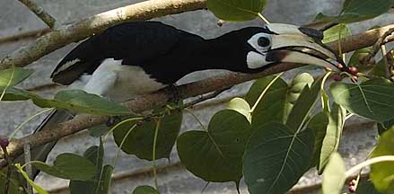
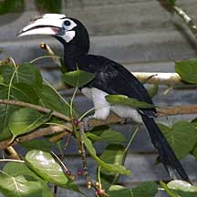
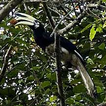
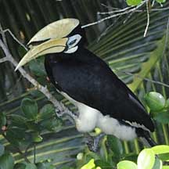
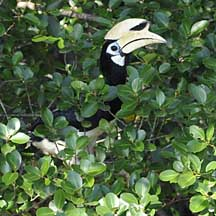
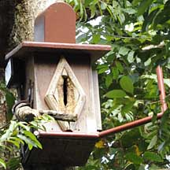
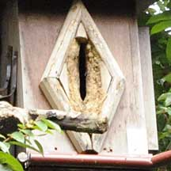
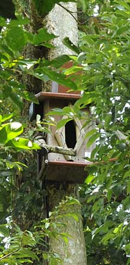
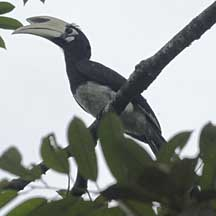
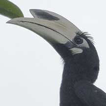

|
|
| vertebrates text index | photo index |
| Phylum Chordata > Subphylum Vertebrata > Class Aves |
| Oriental
pied-hornbill Anthracoceros albirostris Family Bucerotidae updated Oct 2016 Where seen? Oriental pied-hornbills are commonly seen on Pulau Ubin and sometimes also at Changi. They are the only truly wild hornbills found on Singapore. Unlike most other hornbills, Oriental pied-hornbills can be found outside primary rainforests and may visit inhabited areas to feed on fruit. But they still depend on large living trees for nesting sites. |
 Pulau Ubin, Jan 05 |
|
|
Features: A large bird (about
70cm) with black-and-white plumage. The hornbill's trademark is its
large, long bill. The bill, however, is not as heavy as it appears.
It is not made of solid bone but of a honeycombed tissue. An adult
Oriental pied-hornbill has a casque (a knob on top of the bill) which
is yellow-white. The male has a larger casque with few black marks,
while the female has a smaller casque with more black marks. The Oriental
pied-hornbill is basically a black-and-white bird: mostly black with
a white belly and thighs, and white accents around the eye, on the
wing tips and tail. Hornbill Food: Hornbills eat mainly fruit, but they also take insects and small animals including reptiles, birds and mammals. Oriental pied-hornbills often forage in pairs or small groups, often rather quietly for such large birds. When they do call, it is harsh and penetrating and has been described as a loud, staccato cackling; or a yak-yak-yak; and even as the cackling of a witch on a broomstick! They fly rather awkwardly. Sealed with Love: Oriental pied-hornbills nest in a suitable hole in a tall tree. The breeding pair seals the female inside the hole with a plaster of mud and fibres. The male gathers and delivers earth to the female, which seals herself inside the hole. A narrow slit is left open so he can feed her and the chicks. He brings them mostly fruits, insects, crabs and lizards, and sometimes, smaller birds. This remarkable behaviour is believed to deter large predators. A project at Pulau Ubin to provide Oriental pied-hornbills with artificial nest boxes has had lots of success. Role in the habitat: The Oriental pied-hornbill plays an important role in the health of the forest as it disperses seeds that are too big for smaller birds to eat. Human uses: In Sarawak, hornbills are hunted for their meat and feathers. The Helmeted hornbill (Buceros vigil) is hunted for its bill which is solid and can be carved like ivory. The hornbill is Sarawak's state bird. Status and threats: The Oriental pied-hornbill is listed as 'Critically Endangered' in the Red List of threatened animals of Singapore. The Oriental pied-hornbills on Pulau Ubin are considered visitors from Malaysia which later started breeding on the island. Two other hornbills were once recorded in Singapore but are now no longer found: The Rhinoceros hornbill (Buceros rhinoceros) and the Helmeted hornbill (Buceros vigil). |
 Pulau Ubin, Jan 05  Pulau Ubin, Feb 04  Chek Jawa, Mar 10 |
|
 Chek Jawa, Mar 10 |
 Chek Jawa, Mar 10 |
|
 Chek Jawa, Mar 10  Nesting box in use? |
 Artificial nesting box. Chek Jawa, Nov 09 |
 Pulau Ubin, Dec 09  |
| Oriental pied-hornbills on Singapore shores |
| Photos of Oriental pied-hornbills or free download from wildsingapore flickr |
| Distribution in Singapore on this wildsingapore flickr map |
|
Links
References
|